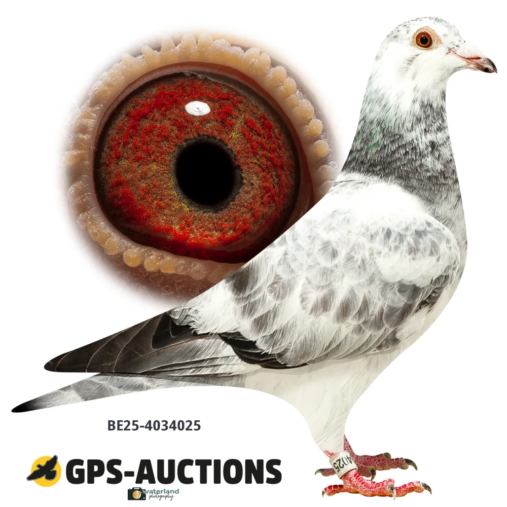
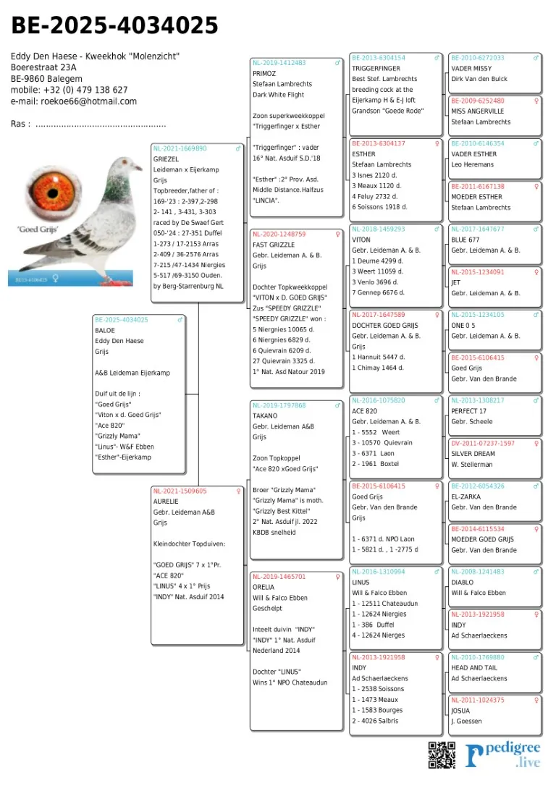

Kweekprofiel
BE25-4034025 · Eddy Den Haese – Molenzicht

Leideman / Eijerkamp
BE25-4034025
Baloe is een jonge kweekduiver afkomstig van Eddy Den Haese en opgebouwd rond moderne Leideman- en Eijerkamp-lijnen.
Beschikbaar beeldmateriaal van Baloe.
Extra media wordt later toegevoegd.
Eén duidelijke stamboom per duif, zodat de pagina rustig en professioneel blijft.
